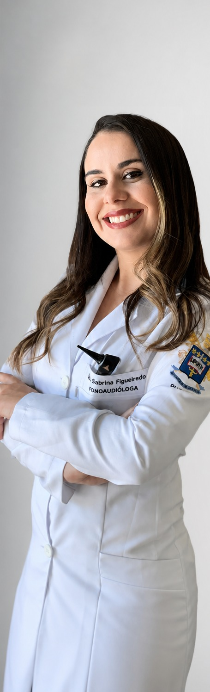

Ouvir.Entender.Viver. Melhor.
Mestre em Fonoaudiologia pela PUC-SP e especialista em Audiologia, a Fga. Sabrina Figueiredo realiza avaliação, diagnóstico e acompanhamento clínico da audição.

Fga. Me. Sabrina FigueiredoCRFa 2-18643 · Mestre em Fonoaudiologia, PUC-SP
Seja muito bem-vindo(a).
A capacidade de se comunicar é um dos dons essenciais do ser humano: a linguagem. É por meio dela que o pensamento se materializa e nossas relações ganham forma em todos os âmbitos da vida.
A audição é a porta de entrada para esse processo. Ela enriquece o cérebro, sustenta conexões complexas com todo o organismo e permite a percepção da fala. Ouvir uma voz, um pássaro, uma melodia é experimentar sensações das quais emergem sentimentos, ideias e vínculos.
Que você possa desfrutar da sua audição ao máximo e de tudo o que ela torna possível.
"Os sons de nossas vidas mudam nosso cérebro."Nina Kraus, neurocientista da audição
O dispositivo indicado depende do perfil auditivo de cada paciente.
Após a audiometria, você conhece as opções de acordo com sua audição, necessidades e estilo de vida. Trabalhamos com todos os tipos de dispositivo auditivo:
- Conectados à internet
- Invisíveis e intracanais
- Com tratamento para zumbido
- Recarregáveis, sem pilha
- Com opções para crianças
- Dispositivos implantáveis
Cuidado auditivo em todas as etapas, da avaliação à reabilitação.
Cada atendimento é conduzido com base em exame clínico detalhado e acompanhamento próximo, do diagnóstico à adaptação plena.
Avaliação Auditiva
Diagnóstico completo, da triagem à investigação detalhada de perdas auditivas.
Implante Coclear
Indicação, acompanhamento e programação, do pré ao pós-operatório.
Próteses Auditivas Implantáveis
Avaliação e indicação de próteses ancoradas no osso e de condução óssea.
Aparelho Auditivo (AASI)
Seleção, adaptação e ajuste fino para cada perfil de perda auditiva.
Reabilitação Auditiva
Acompanhamento terapêutico para adaptação plena aos dispositivos.
Processamento Auditivo Central
Avaliação e treinamento para transtornos do processamento auditivo (PAC).
Atendimento em LIBRAS
Consultas conduzidas em Língua Brasileira de Sinais.
Tratamento de Zumbido
Avaliação e manejo terapêutico para zumbido e hiperacusia.
Do primeiro contato ao acompanhamento contínuo.
Conversa inicial
Contato via WhatsApp para entender a queixa e agendar sua avaliação sem compromisso.
Avaliação
Anamnese e exames complementares para mapear com precisão o quadro auditivo.
Indicação
Definição conjunta do melhor caminho: AASI, implante, reabilitação ou acompanhamento.
Acompanhamento
Ajustes, revisões e suporte contínuo ao longo de todo o tratamento.
Reconhecimento em reportagens sobre saúde auditiva.
O vídeo aborda a importância de reconhecer os sinais da perda auditiva, buscar uma avaliação especializada e receber uma orientação individualizada para preservar a comunicação e a qualidade de vida.
O que dizem os pacientes acompanhados pela Dra. Sabrina.
Agende sua avaliação sem compromisso em poucos minutos.
Preencha os dados abaixo. Ao enviar, sua mensagem é montada automaticamente e você é direcionado ao WhatsApp da Sabrina para confirmar o horário.
Dúvidas comuns sobre perda auditiva e tratamento.
Como sei se tenho perda auditiva? +
Como funciona a avaliação auditiva? +
O aparelho auditivo (AASI) resolve todos os casos? +
Quando o implante coclear é indicado? +
A avaliação envolve algum compromisso? +
Consultório na Av. Paulista e parceria hospitalar.
Jardim Paulista, São Paulo, SP
01311-200 Ver no mapa
Vila Mariana, São Paulo, SP
04037-002 Ver no mapa
- Segunda a quinta8:00 – 19:00
- Sexta-feira8:00 – 17:00
- Sábado e domingoFechado
Cuidado clínico especializado para a sua audição.
Agende sua avaliação sem compromisso com a Fga. Sabrina Figueiredo pelo WhatsApp.